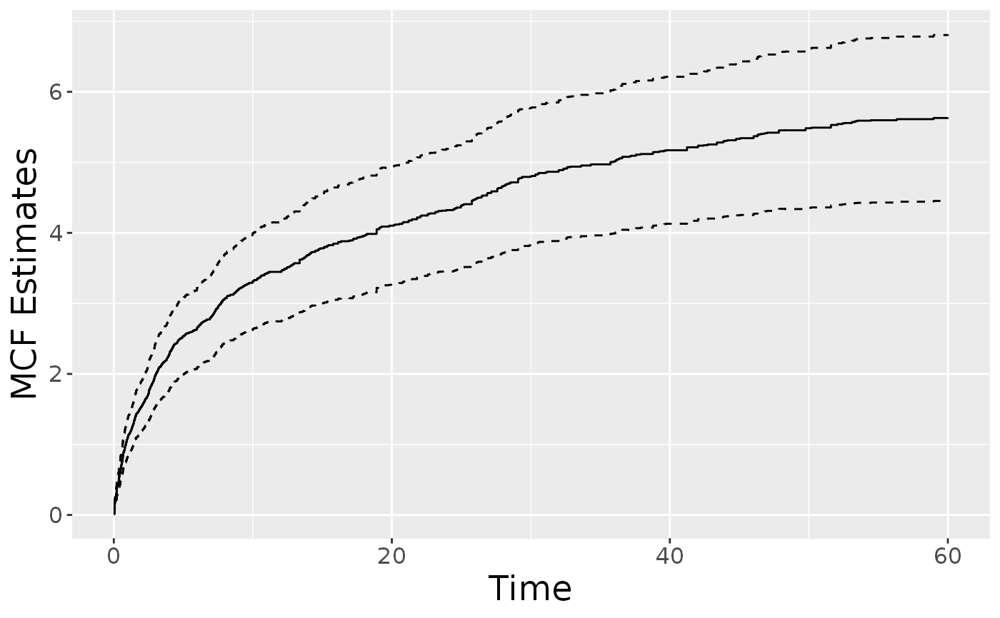

Fits a general (joint) semiparametric regression model for the recurrent event data, where the rate function of the underlying recurrent event process and the hazard function of the terminal event can be specified as a Cox-type model, an accelerated mean model, an accelerated rate model, or a generalized scale-change model. See details for model specifications.
reReg( formula, data, subset, model = "cox", B = 0, se = c("boot", "sand"), control = list() )
| formula | a formula object, with the response on the left of a "~" operator,
and the predictors on the right.
The response must be a recurrent event survival object as returned by function |
|---|---|
| data | an optional data frame in which to interpret the variables occurring
in the |
| subset | an optional logical vector specifying a subset of observations to be used in the fitting process. |
| model | a character string specifying the underlying model.
The available functional form for the rate function and the hazard function include a Cox-type model,
an accelerated mean model, an accelerated rate model, or a generalized scale-change model,
and can be specified via "cox", "am", "ar", or "gsc", respectively.
The rate function and hazard function separated by " |
| B | a numeric value specifies the number of bootstraps for variance estimation.
When |
| se | a character string specifying the method for the variance estimation. See Details.
|
| control | a list of control parameters. See |
Model specification:
Suppose the recurrent event process and the failure events are
observed in the time interval \(t\in[0,\tau]\),
for some constant \(\tau\).
We formulate the recurrent event rate function, \(\lambda(t)\),
and the terminal event hazard function, \(h(t)\),
in the form of
$$\lambda(t) = Z \lambda_0(te^{X^\top\alpha}) e^{X^\top\beta}, h(t) = Z h_0(te^{X^\top\eta})e^{X^\top\theta},$$
where \(\lambda_0(t)\) is the baseline rate function,
\(h_0(t)\) is the baseline hazard function,
\(X\) is a \(n\) by \(p\) covariate matrix and \(\alpha\),
\(Z\) is an unobserved shared frailty variable, and
\((\alpha, \eta)\) and \((\beta, \theta)\) correspond to the shape and size parameters,
respectively.
The model includes several popular semiparametric models as special cases,
which can be specified via the model argument with the rate function
and the hazard function separated by "|".
For examples,
Wang, Qin and Chiang (2001) (\(\alpha = \eta = \theta = 0\))
can be called with model = "cox";
Huang and Wang (2004) (\(\alpha = \eta = 0\))
can be called with model = "cox|cox";
Xu et al. (2017) (\(\alpha = \beta\) and \(\eta = \theta\))
can be called with model = "am|am";
Xu et al. (2019) (\(\eta = \theta = 0\)) can be called with model = "gsc".
Users can mix the models depending on the application. For example,
model = "cox|ar" postulate a Cox proportional model for the
recurrent event rate function and an accelerated rate model for
the terminal event hazard function (\(\alpha = \theta = 0\)).
If only one model is specified without an "|",
it is used for both the rate function and the hazard function.
For example, specifying model = "cox" is equivalent to model = "cox|cox".
Some models that assumes Z = 1 and requires independent
censoring are also implemented in reReg;
these includes model = "cox.LWYY" for Lin et al. (2000),
model = "cox.GL" for Ghosh and Lin (2002),
and model = "am.GL" for Ghosh and Lin (2003).
Additionally, an improved estimation of the proportional rate model
(Huang and Huang 2022) can be called by model = "cox.HH" with
additional control options to specify the underlying procedure.
See online vignette
for a detailed discussion of the implemented regression models.
Variance estimation:
The available methods for variance estimation are:
performs nonparametric bootstrap.
performs the efficient resampling-based variance estimation.
Improving proportional rate model:
A common semiparametric regression model for recurrent event process
under the noninformative censoring assumption is the Cox-type proportional rate model
(available in reReg() via model = "cox.LWYY").
However, the construction of the pseudo-partial score function ignores the
dependency among recurrent events and thus could be inefficient.
To improve upon this popular method, Huang and Huang (2022) proposed to combine
a system of weighted pseudo-partial score equations via the generalized method of moments (GMM)
and empirical likelihood (EL) estimation.
The proposed GMM and EL procedures are available in reReg via model = "cox.HH"
with additional control specifications.
See online vignette
for an illustration of this feature.
Control options:
The control list consists of the following parameters:
absolute error tolerance.
a list contains initial guesses used for root search.
the equation solver used for root search.
The available options are BB::BBsolve, BB::dfsane, BB::BBoptim,
optimx::optimr, dfoptim::hjk, dfoptim::mads, optim,
and nleqslv::nleqslv.
a character string indicating whether the log-rank type estimating equation or the Gehan-type estimating equation (when available) will be used.
an logical value indicating whether parallel computation
will be applied when se = "boot" is called.
an integer value specifying the number of CPU cores to be used when
parallel = TRUE. The default value is half the CPU cores on the current host.
A character string indicating either to improve the proportional rate model via
the generalized method of moments (cppl = "GMM") or empirical likelihood estimation (cppl = "EL").
This option is only used when model = "cox.HH".
A list of (up to two) weight functions to be combined with the weighted pseudo-partial likelihood scores.
Avaialble options are "Gehan" and "cumbase",
which correspond to the Gehan's weight and the cumulative baseline hazard function, respectively.
Alternatively, the weight functions can be specified with function formulas.
This option is only used when model = "cox.HH".
A logical variable denoting whether some of the
intermediate results of iterations should be displayed to the user. Default is FALSE.
Lin, D., Wei, L., Yang, I. and Ying, Z. (2000). Semiparametric Regression for the Mean and Rate Functions of Recurrent Events. Journal of the Royal Statistical Society: Series B (Methodological), 62: 711--730.
Wang, M.-C., Qin, J., and Chiang, C.-T. (2001). Analyzing Recurrent Event Data with Informative Censoring. Journal of the American Statistical Association, 96(455): 1057--1065.
Ghosh, D. and Lin, D.Y. (2002). Marginal Regression Models for Recurrent and Terminal Events. Statistica Sinica: 663--688.
Ghosh, D. and Lin, D.Y. (2003). Semiparametric Analysis of Recurrent Events Data in the Presence of Dependent Censoring. Biometrics, 59: 877--885.
Huang, C.-Y. and Wang, M.-C. (2004). Joint Modeling and Estimation for Recurrent Event Processes and Failure Time Data. Journal of the American Statistical Association, 99(468): 1153--1165.
Xu, G., Chiou, S.H., Huang, C.-Y., Wang, M.-C. and Yan, J. (2017). Joint Scale-change Models for Recurrent Events and Failure Time. Journal of the American Statistical Association, 112(518): 796--805.
Xu, G., Chiou, S.H.,Yan, J., Marr, K., and Huang, C.-Y. (2019). Generalized Scale-Change Models for Recurrent Event Processes under Informative Censoring. Statistica Sinica, 30: 1773--1795.
Huang, M.-Y. and Huang, C.-Y. (2022). Improved semiparametric estimation of the proportional rate model with recurrent event data. In revision.
data(simDat) ## Nonparametric estimate plot(reReg(Recur(t.start %to% t.stop, id, event, status) ~ 1, data = simDat, B = 50))fm <- Recur(t.start %to% t.stop, id, event, status) ~ x1 + x2 ## Fit the Cox rate model summary(reReg(fm, data = simDat, model = "cox", B = 50))#> Call: #> reReg(formula = fm, data = simDat, model = "cox", B = 50) #> #> Recurrent event process: #> Estimate StdErr z.value p.value #> x1 -1.13602 0.13704 -8.2900 < 2.2e-16 *** #> x2 -1.07493 0.14264 -7.5361 < 2.2e-16 *** #>#> Call: #> reReg(formula = fm, data = simDat, model = "cox|cox", B = 50) #> #> Recurrent event process: #> Estimate StdErr z.value p.value #> x1 -1.13602 0.13704 -8.2900 < 2.2e-16 *** #> x2 -1.07493 0.14264 -7.5361 < 2.2e-16 *** #>## Fit the scale-change rate model summary(reReg(fm, data = simDat, model = "gsc", B = 50, se = "sand"))#> Call: #> reReg(formula = fm, data = simDat, model = "gsc", B = 50, se = "sand") #> #> Recurrent event process: #> Estimate StdErr z.value p.value #> x1 -1.13602 0.13704 -8.2900 < 2.2e-16 *** #> x2 -1.07493 0.14264 -7.5361 < 2.2e-16 *** #>